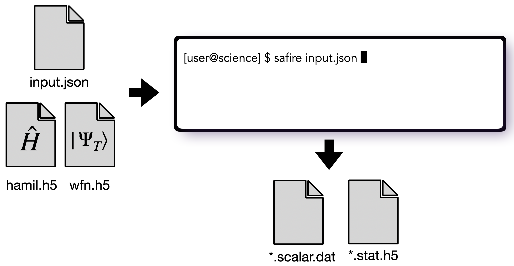
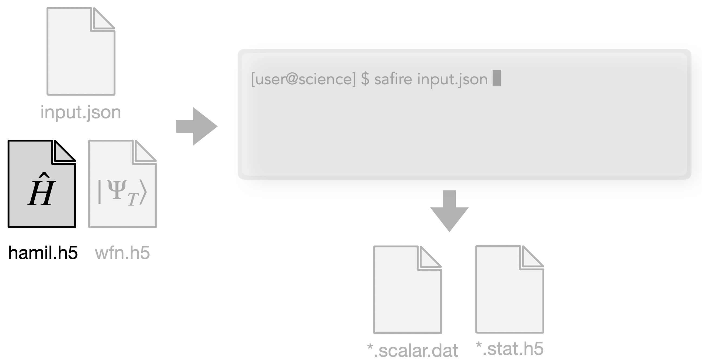
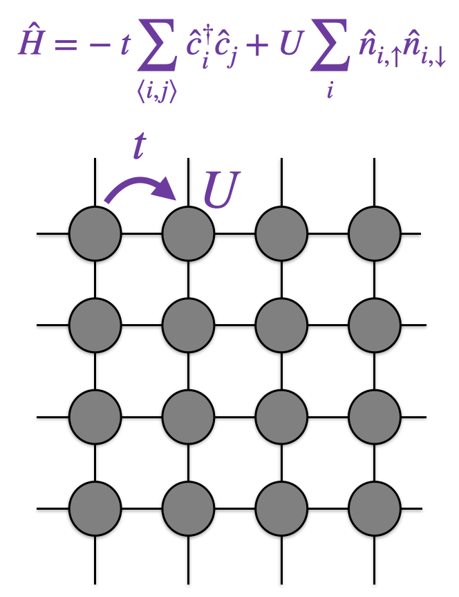
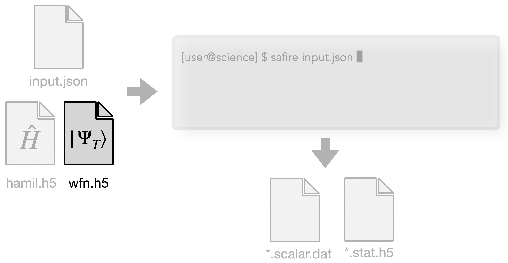
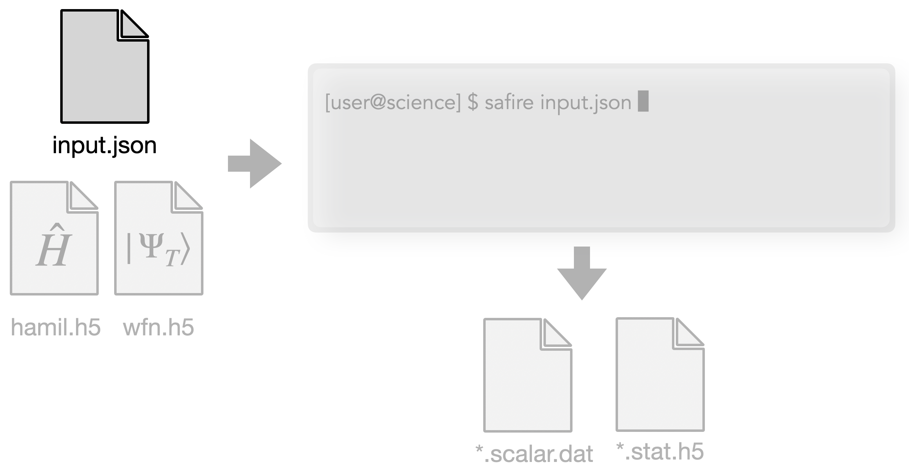
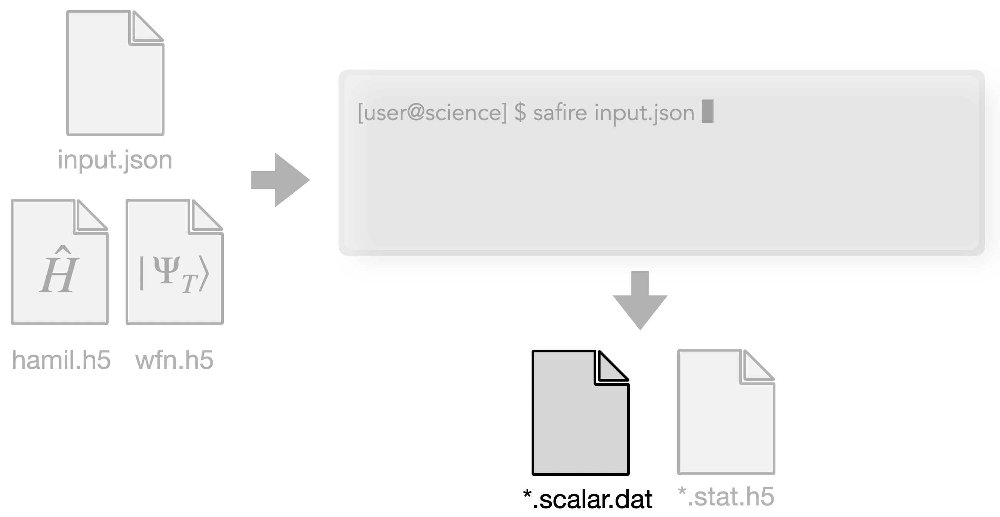
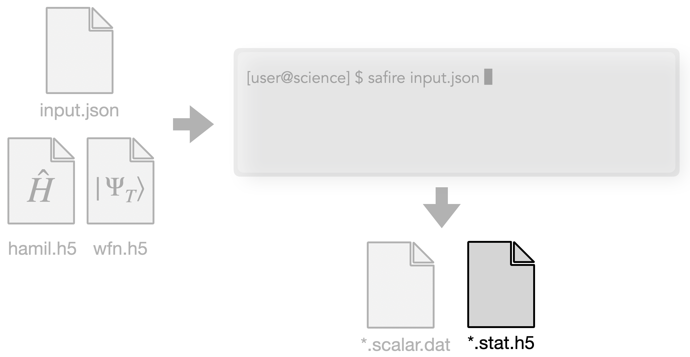
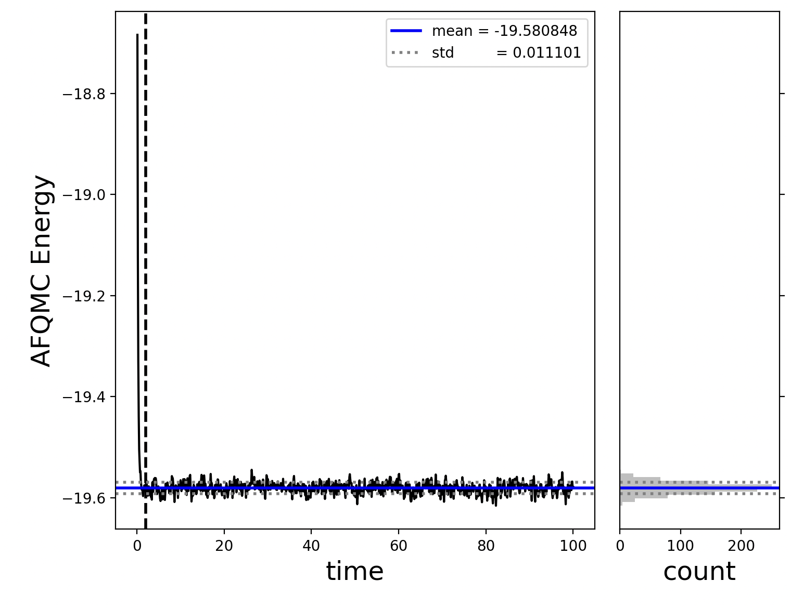

Download this notebook (.ipynb + data files)
1. Hello SAFIRE#
Goal: At the end of this tutorial, you will know how to run an AFQMC calculation using SAFIRE and extract the AFQMC energy from the output given all necessary inputs.
1.1. What you will learn#
what the inputs and outputs of SAFIRE are and what their high level purposes are
how to invoke the SAFIRE executable from the command line in serial, using MPI, and using GPU(s)
how to extract the AFQMC energy from the outputs of SAFIRE using afqmctools
how to use the tutorial helper functions to do 2 and 3 from within an interactive Python notebook
For this tutorial, we provide all of the inputs needed to run an AFQMC calculation. You can find them in “files” relative to the directory of this tutorial.
AFQMC is formulated in terms of a generic second quantized Hamiltonian and trial wavefunction. In order to take advantage of this flexibility, SAFIRE accepts a generic second quantized Hamiltonian and wavefunction, saved in HDF5 files, as input along with AFQMC algorithmic parameters in a json-based input file.
Below is a schematic of the inputs and outputs of SAFIRE.

We will learn more about the details of all of these files in future tutorials. For now, we will explain the purpose of each of these files at a high level without going into the details.
The Inputs
Hamiltonian file : “hamil.h5”

An HDF5 file containing the second-quantized Hamiltonian \(\hat{H}\). As we will see later, the json input file is used to select a Hamiltonian in a calculation.
We will learn how to generate this file in later tutorials. For this tutorial, we have supplied an HDF5 file containing the Hamiltonian corresponding to the Hubbard model on a 4x4 lattice with periodic boundary conditions, and \(U/t = 4\) in “hamil.h5”.

For technical details on the hamiltonian HDF5 format, see the User Guide.
Wavefunction file : “wfn.h5”

An HDF5 file containing the trial wavefunction, \(| \Psi_\mathrm{T} \rangle\). As we will see later, the json input file is used to select a trial wavefunction in a calculation.
We will learn how to generate this file in later tutorials. For this tutorial, we have supplied an HDF5 file containing the RHF ground state as the trial wavefunction.
For technical details on the wavefunction HDF5 format, see the User Guide.
Input file (json format) : “input.json”

We will learn about the input file in more detail in the next tutorial, Understanding the input file. For now, we provide just the details you need to understand this tutorial.
The json input file is used to set AFQMC run parameters, and to tell SAFIRE where to find the trial wavefunction and Hamiltonian. The input file is organized into a hierarchy of input “blocks” which each control specific details of the calculation.
For now, you only need to understand the “wavefunction” and the “hamiltonian” input blocks. The “wavefunction” input block is used to tell SAFIRE where to find the HDF5 file containing the trial wavefunction. Similarly, the “hamiltonian” input block is used to tell SAFIRE where to find the HDF5 file containing the Hamiltonian.
The sample json file that we have provided is reproduced here.
{
"afqmc": {
"project": {
"id": "qmc",
"series": 0
},
"execute": {
"walker_set": {
"walker_type": "CLOSED"
},
"wavefunction": {
"filename": "files/wfn.h5"
},
"hamiltonian": {
"filename": "files/hamil.h5"
},
"timestep": 0.01,
"steps": 10000,
"n_walkers_per_mpi_task": 200,
"seed": 42
}
}
}
Notice that the “wavefunction” and “hamiltonian” input blocks point to the HDF5 file where we have saved the RHF ground state and second quantized Hamiltonian, respectively.
The Outputs
Now that we have seen what the inputs of SAFIRE are, we move on to what it outputs.
stdout
SAFIRE prints information about the setup of the AFQMC calculation to stdout along with timing information at the end.
We will see the output from SAFIRE throughout the tutorials. Here is a sample header which is printed at the beginning of the output.
███████╗ █████╗ ███████╗██╗██████╗ ███████╗
██╔════╝██╔══██╗██╔════╝██║██╔══██╗██╔════╝
███████╗███████║█████╗ ██║██████╔╝█████╗
╚════██║██╔══██║██╔══╝ ██║██╔══██╗██╔══╝
███████║██║ ██║██║ ██║██║ ██║███████╗
╚══════╝╚═╝ ╚═╝╚═╝ ╚═╝╚═╝ ╚═╝╚══════╝
AF App version: 1.0.0
app git branch: develop
app git commit: 6a251b811061707f9dceb3804e146148bf58e90f
AFQMCFactory Project settings:
-- ncores (local) : 1
-- n_groups : 1
-- id : qmc
-- series : 0
-- MPI tasks/node : 1
-- MPI nodes : 1
-- MPI tasks : 1
You can see git information from when SAFIRE was compiled. You can also see MPI / parallelization information. We will explore the output further in later tutorials.
scalar data file : [id].s[series].scalar.dat

A text-based file where stochastic samples of scalar data, such as the energy are printed by SAFIRE.
This file is not meant to be directly read by the user. Instead, afqmctools provides tools to extract information from this file. We will learn how to extract the AFQMC energy from this file later in this tutorial.
The name of file comes from the “id” and “series” parameters set in the json input file. “id” is just some sting, and “series” is an integer. They are used so that multiple AFQMC calculations can be performed in a single directory without output file collisions.
observables output HDF5 file : [id].s[series].stat.h5

An HDF5 file where stochastic samples of non-scalar data, such as the one-body reduced density matrix, are printed by SAFIRE when requested.
Similarly to the [id].s[series].scalar.dat file, this file is not meant to be directly read by a user. Instead, afqmctools provides tools to extract data from this file for you. You will learn more about this in Computing general observables.
1.2. Running SAFIRE#
Now that we have learned what the inputs and outputs of SAFIRE are, we are ready to learn how to run the SAFIRE executable given the inputs.
1.2.1. Running SAFIRE in serial#
SAFIRE can be invoked from the command line as
$ /path/to/SAFIRE/build/bin/safire input.json
where input.json is the json input file.
The input file can be called whatever you would like, so
long as its name ends in .json.
When you run this, an AFQMC calculation will be performed based on the contents of input.json,
using the Hamiltonian and trial wavefunction specified there.
For brevity, we will abbreviate /path/to/SAFIRE/build/bin/safire as safire in this tutorial.
There are many standard ways to make safire accessible from the command line in this way.
You can see the possible command line options for SAFIRE by using the -h/--help switch.
$ safire --help
SAFIRE
Usage:
/mnt/home/beskridge/software/SAFIRE/build/CPU/bin/safire [OPTION...] [optional args]
-h, --help print help message
-v, --version print version message
--verbosity arg 0, 1, 2, ...: higher means more (default: 2)
--debug arg 0, 1, 2, ...: higher means more (default: 0)
--filenames arg input filenames
1.2.2. Exercise: Try Running SAFIRE#
Run SAFIRE with the provided input files. You may use either the code block below, or run SAFIRE in a terminal as described previously. In either case, you can find the json input file here
/path/to/SAFIRE/tutorials/lattices/01_hello_safire/files/input.json
where /path/to/SAFIRE should be replaced with the path where
you have installed SAFIRE.
The provided json input file assumes that you are running SAFIRE from
/path/to/SAFIRE/tutorials/01_hello_safire/
After running with the default parameters, try changing the verbosity level to see what changes.
!safire files/input.json --verbosity 1
1.2.3. Post-exercise#
You should the following a the top of the output after running SAFIRE.
███████╗ █████╗ ███████╗██╗██████╗ ███████╗
██╔════╝██╔══██╗██╔════╝██║██╔══██╗██╔════╝
███████╗███████║█████╗ ██║██████╔╝█████╗
╚════██║██╔══██║██╔══╝ ██║██╔══██╗██╔══╝
███████║██║ ██║██║ ██║██║ ██║███████╗
╚══════╝╚═╝ ╚═╝╚═╝ ╚═╝╚═╝ ╚═╝╚══════╝
AF App version: 1.0.0
app git branch: develop
app git commit: 6a251b811061707f9dceb3804e146148bf58e90f
AFQMCFactory Project settings:
-- ncores (local) : 1
-- n_groups : 1
-- id : qmc
-- series : 0
-- MPI tasks/node : 1
-- MPI nodes : 1
-- MPI tasks : 1
Congratulations, you have now run an AFQMC calculation using SAFIRE!
In the directory that you ran this notebook from, you should see a file called
qmc.s000.scalar.dat.
We will return to how to use the tools in afqmctools to extract the AFQMC energy later in this tutorial.
1.3. Running SAFIRE in parallel#
1.3.1. Using MPI#
SAFIRE can be run with MPI in the usual ways. For example, using mpirun, we could run SAFIRE with 64 MPI tasks as
$ mpirun -np 64 safire --filenames input.json
It is important to note that the number of walkers is specified in the input file
as n_walkers_per_mpi_task.
So, the total number of walkers using the sample input file above and 64 MPI tasks
would be
For the sample inputs, this is significantly more walkers than is necessary,
and for calculations that run on a CPU only build of SAFIRE,
n_walkers_per_mpi_task will typically be on the order of 10-50.
1.3.2. GPU Builds#
To run on GPUs, you must compile SAFIRE for the GPU. See the documentation for instructions on compiling for GPU.
On GPU builds of SAFIRE, the calculation is more efficient when the GPU is saturated. The specific number of walkers needed to achieve this depends on how large the system is. For small systems, this could mean using on the order of 1000 walkers or more per task. For very large systems, this may mean on the order of 10 walkers per MPI task.
1.3.3. Your Turn#
Try running SAFIRE with MPI! To get the same numbers as us, you will need to use the same number of MPI processes as we did, 16.
!mpirun -np 16 safire files/input.json --verbosity 1
1.4. Basic post-processing#
Now that we’ve learned how to invoke the SAFIRE executable from the command line in serial, using MPI, and using GPU(s), we are ready to learn how to extract the AFQMC energy from the outputs of SAFIRE using afqmctools.
We previously ran SAFIRE on the Hamiltonian of the Hubbard model on a 4x4 lattice with periodic boundary conditions and \(U/t = 4\), and using a UHF trial wavefunction. This generated a scalar data file, “qmc.s000.scalar.dat”, which contains the scalar data that was accumulated during the AFQMC calculation, including the AFQMC energy.
afqmctools provides the energy_stats CLI tool to extract data from the scalar data file.
If you followed the official installation instructions for afqmctools, you
should be able to run $ energy_stats from within whatever Python environment you
installed afqmctools in.
By default, energy_stats will compute the average AFQMC energy and the stochastic uncertainty of the
energy based on the samples in the *.scalar.dat file.
Below is an example of using energy_stats where we have set the “x axis” to “time”,
and the equilibration “time” to 5.0 inverse energy units.
$ scalar_stats qmc.s000.scalar.dat -s time -e 2.0
====== [analyze_scalar_data Settings] ======
[+] fname = qmc.s000.scalar.dat
[+] mark_header = #
[+] series_column = time
[+] nequil = 2.0
[+] estimate_equil = False
[+] column = LocalEnergy
[+] reblock = 1
[+] ndiscard = None
[+] list = False
[+] trace = False
[+] append = None
[+] dump = False
[+] dump_fname = trace.dat
[+] verbose = True
[+] autocorr = None
[+] savefig = None
[+] dump_avail_columns = False
AFQMC Energy -19.580848 +/- 0.000669 3.56 2.0/100.0
You can also view the AFQMC energy versus the total projection time (sometimes referred to as the “equilibration curve” by
adding the -t option to plot the data “trace”.
Running
$ energy_stats qmc.s000.scalar.dat -x time -e 2.0 -t
will generate the plot,

One should check the equilibration curve to ensure that the equilibration
time, -x time -e 2.0 is large enough to discard the samples where AFQMC is not
sampling from the target many-body wavefunction yet.
On the other hand, the equilibration length should not be so large that it discards
equilibrated samples.
We will learn how to post-process AFQMC results from SAFIRE in more detail in Computing general observables.
1.4.1. Exercise: Try Running energy_stats#
Use the code block below to run energy_stats on the data that we generated
in the last exercise.
You should get an AFQMC energy of -19.580880 +/- 0.000697
if you did not change any settings.
Now, try to changing the equilibration length such that only un-equilibrated samples are discarded.
!scalar_stats qmc.s000.scalar.dat -s time -e 2.0
1.5. Post Exercise#
If you play around with the equilibration length, you will see that, for very small equilibration length, the predicted energy will be incorrect. This is due to the inclusion of un-equilibrated samples in the average. On the other hand, the average energy should be stable if you use too large of a value for the equilibration length.
1.6. Some Tutorial Helper Python Functions#
Now that we have learned how to extract the AFQMC energy from the outputs of SAFIRE using afqmctools, we are ready to how to use the tutorial helper functions to invoke SAFIRE and extract the AFQMC energy from within an interactive Python notebook.
For convenience, we provide the run_afqmc() helper function in the tutorial_utils Python package.
run_afqmc(input_file=input_file, np=np) runs the SAFIRE executable as
$ mpirun -np [np] safire --filenames [input_file]
Here is a typical example of using run_afqmc().
from tutorial_utils import run_afqmc
scratch_dir = Path("data")
run_afqmc(
run_dir=scratch_dir, # directory to run SAFIRE in - output files will be there
input_file="/path/to/inputfile/input.json",
np=12, # number of MPI tasks
output_file=None # optionally direct output to file; if None,
) # then output will be captured in the jupyter notebook.
Where the np parameter is forwarded directly to -np [np] and
input_file is passed to safire --filenames [input_file].
1.6.1. Exercise: Run the full sample calculation using the convenience wrappers.#
Use the code block below to run the entire calculation again.
Just as before, at the end, you should get an AFQMC energy of -19.580880 +/- 0.000697
if you did not change any settings.
from pathlib import Path
import shutil
import numpy as np
from afqmctools.hamiltonian.mol import write_hamiltonian_generic
from afqmctools.wavefunction.mol import write_wfn
from afqmctools.inputs.from_hdf import write_json
from tutorial_utils import run_afqmc
from stats.scalar_dat import analyze_scalar_data
scratch_dir = Path("data")
scratch_dir.mkdir(parents=True, exist_ok=True)
# copy the provided files
files_dir = scratch_dir / "files"
files_dir.mkdir(exist_ok=True)
shutil.copy("files/input.json", files_dir)
shutil.copy("files/wfn.h5", files_dir)
shutil.copy("files/hamil.h5", files_dir)
run_afqmc(
run_dir=scratch_dir,
input_file="files/input.json", # the location of the sample input file.
np=16, # to run in serial just as before!
)
# post process!
_ = analyze_scalar_data(dict(
fname = scratch_dir/"qmc.s000.scalar.dat",
xaxis = "time",
nequil = 5,
trace = True
))
1.7. Summary#
In this tutorial, you learned
what the inputs and outputs of SAFIRE are and what their high level purposes are
how to invoke the SAFIRE executable from the command line in serial, using MPI, and using GPU(s)
how to extract the AFQMC energy from the outputs of SAFIRE using afqmctools
how to use the tutorial helper functions to do 2 and 3 from within an interactive Python notebook
Next, you learn more about the input file in Understanding the input file.